Scammed: Getting Even
Season 1. Fox Nation. Following victims as they turn the tables on digital scammers.
Season 1. Fox Nation. Following victims as they turn the tables on digital scammers.
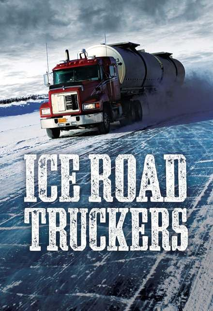
Adventure Doc SeriesSeason 12. Drivers pushing the limits on the world's most dangerous frozen highways.

Knowledge Network. A feature biography uncovering the life of an unsung Canadian music icon.
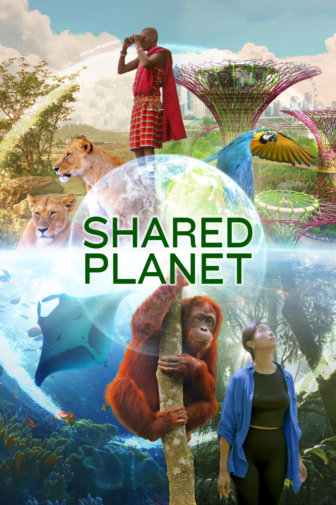
Nature Mini SeriesCBC, PBS, Arte. People and wildlife thriving together worldwide, revealing sustainable ways humans and nature coexist.
YouTube Originals. Leo-Nominated, Best Doc Series. Charting AI's transformation of human life.
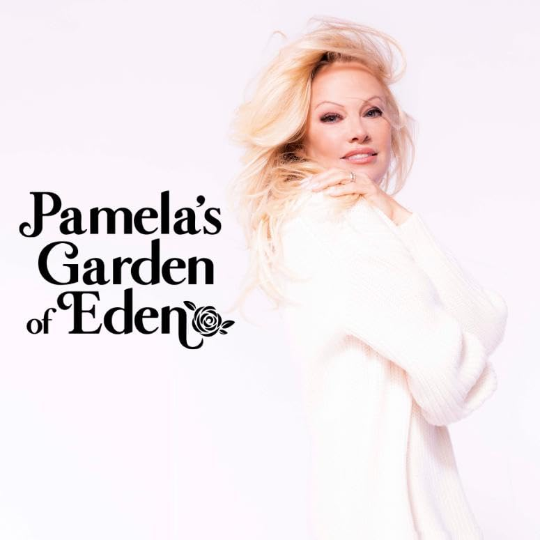
Lifestyle SeriesPamela Anderson invites you into her home and shares her journey.
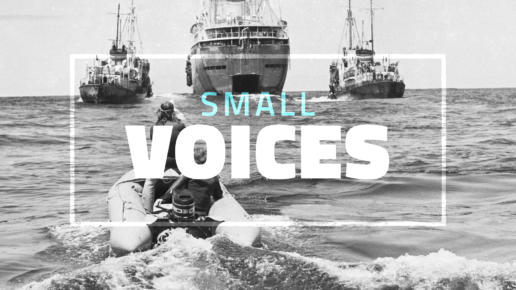
Historical Doc Series
Knowledge Network. Restoring overlooked figures to the record of BC's history.
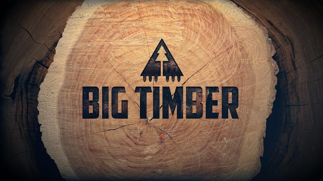
Occupational Doc SeriesNetflix & History Channel. Deep in the old-growth forests of BC with the loggers who risk everything.
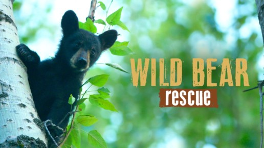
Nature Doc SeriesDiscovery & Animal Planet. Leo-Nominated, Best Doc Series. Rehabilitating orphaned cubs back to the wild.
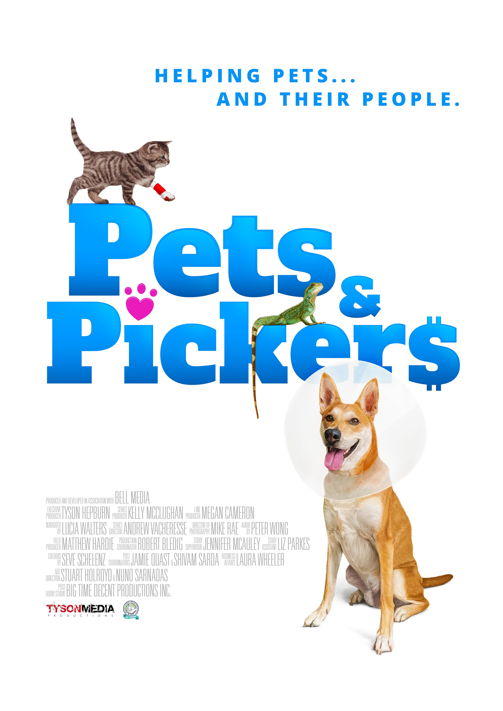
Factual Doc SeriesDiscovery & Animal Planet. Veterinarians and Thrift Collectors team up to help animals and their owners.
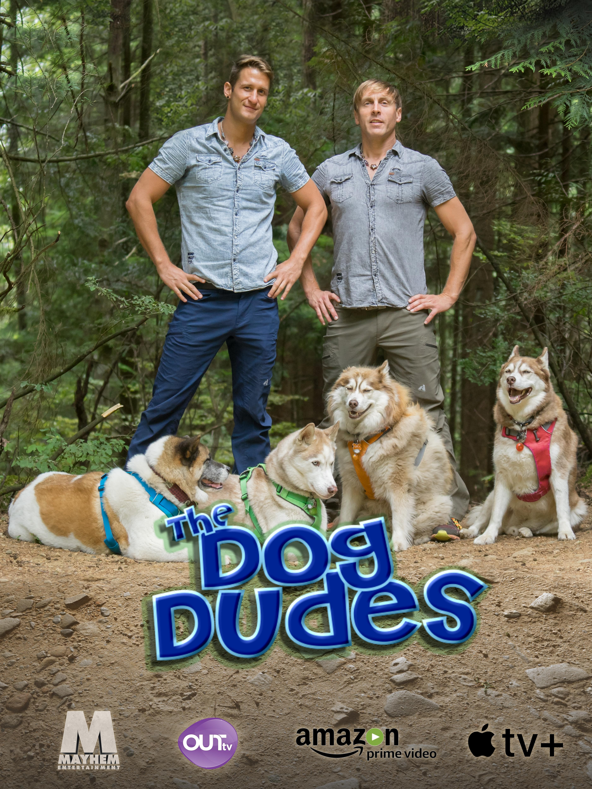
Lifestyle SeriesOutTV. Leo-Nominated, Best Reality or Lifestyle Series. Two trainers, a pack of dogs, countless transformations.
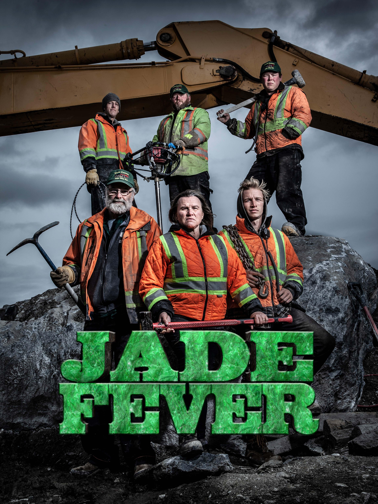
Occupational Doc SeriesDiscovery. The Bunce family's relentless pursuit of jade in the remote mountains of northern BC.
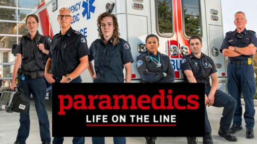
Medical Doc Series
Knowledge Network. CCE-Nominated, Best Doc Series. Frontline decisions, life and death.
CBC. CSA-Nominated, Best Factual Program. An intimate portrait of adolescence today.
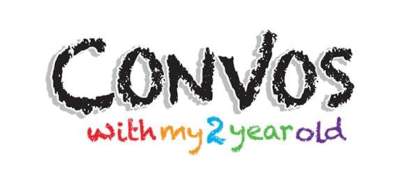
Comedy SeriesYouTube. Re-enacting real toddler conversations with full-grown adults.
Warner Bros. The live-action adaptation of the iconic fighting franchise.
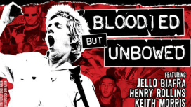
Feature Music Doc
Knowledge Network. Audience Choice Award, Berlin PunkFilmFest. The raucous birth of Vancouver's punk scene.
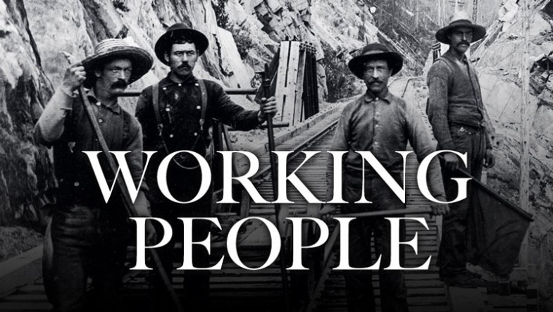
Historical Doc Series
Knowledge Network. Leo-Nominated, Best Doc Series · Leo-Winner, Best Sound Editing.
History Channel & National Geographic. Prospectors chasing fortunes in the Yukon wilderness.
Broadcast commercial. Square Enix & Eidos Montréal. Launch campaign for the acclaimed action RPG.
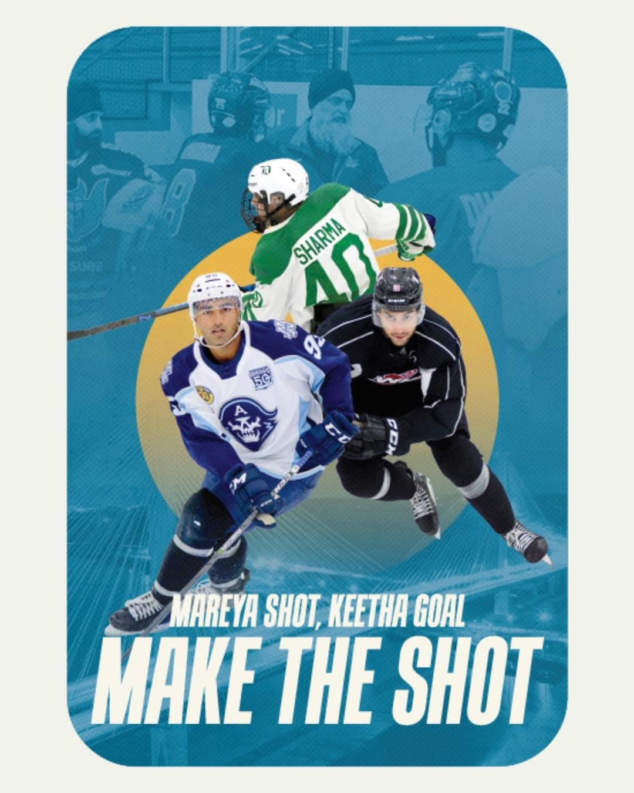
Feature Sports DocA feature documentary exploring hockey and British Columbia's South Asian community.
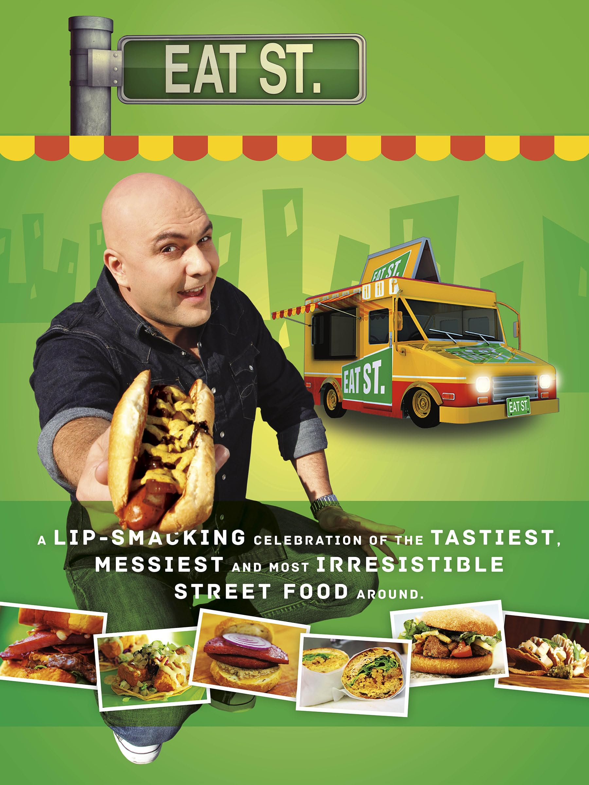
Food & Lifestyle SeriesComedian James Cunningham explores North American street food.